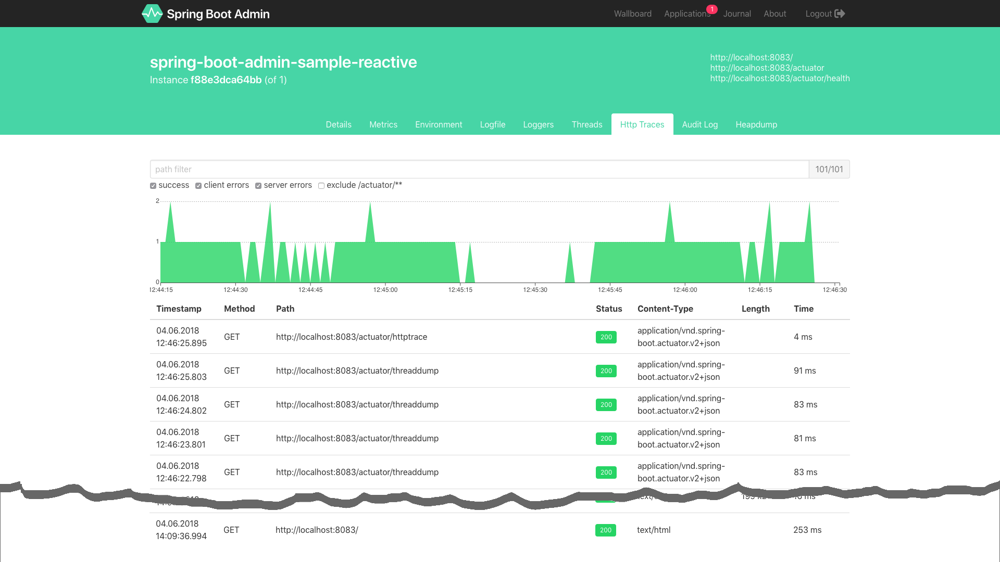

<!DOCTYPE HTML>
<html lang="zh-CN">
<head><meta name="generator" content="Hexo 3.8.0">
    <!--Setting-->
    <meta charset="UTF-8">
    <meta name="viewport" content="width=device-width, user-scalable=no, initial-scale=1.0, maximum-scale=1.0, minimum-scale=1.0">
    <meta http-equiv="X-UA-Compatible" content="IE=Edge,chrome=1">
    <meta http-equiv="Cache-Control" content="no-siteapp">
    <meta http-equiv="Cache-Control" content="no-transform">
    <meta http-equiv="pragma" content="no-cache">
    <meta http-equiv="Cache-Control" content="no-cache, must-revalidate">
    <meta http-equiv="expires" content="Mon Apr 06 2020 02:12:39 GMT+0800 (CST)">
    <meta name="renderer" content="webkit|ie-comp|ie-stand">
    <meta name="apple-mobile-web-app-capable" content="张万众的博客 - 关注Spring Cloud、Docker">
    <meta name="apple-mobile-web-app-status-bar-style" content="black">
    <meta name="format-detection" content="telephone=no,email=no,adress=no">
    <meta name="browsermode" content="application">
    <meta name="screen-orientation" content="portrait">
    <meta name="theme-version" content="1.2.3">
    <meta name="root" content="/">
    
    <!--SEO-->

    <meta name="keywords" content="Spring Cloud,监控,Actuator">


    <meta name="description" content="第2节（ 跟我学Spring Cloud（Finchley版）-02-构建分布式应用 ）说过：

应用没有监控，没有画板，一切指标都没有。在这个Growth Hack逐渐成为主流的时代，不弄个Dashboard把系统压力、QPS、CPU、内存、日活啥的可视化，你好意思出来混吗……

本节我们来...">


<meta name="robots" content="all">
<meta name="google" content="all">
<meta name="googlebot" content="all">
<meta name="verify" content="all">
    <!--Title-->


<title>跟我学Spring Cloud（Finchley版）-03-监控：强大的Spring Boot Actuator | 张万众的博客 - 关注Spring Cloud、Docker</title>


    <link rel="alternate" href="../../atom.html" title="张万众的博客 - 关注Spring Cloud、Docker" type="application/atom+xml">


    

    


<link rel="stylesheet" href="../../static/css/bootstrap.min-271a649e0635d6fa1b.css">
<link rel="stylesheet" href="../../static/css/font-awesome.min-ac2bebcf7fb5b26.css">
<link rel="stylesheet" href="../../static/css/style-6f3c140f6eee20e6591da00ec0.css">


    


    <script>
        var _hmt = _hmt || [];
        (function() {
            var hm = document.createElement("script");
            hm.src = "https://hm.baidu.com/hm.js?13766878cde148282622871dd245a973";
            var s = document.getElementsByTagName("script")[0];
            s.parentNode.insertBefore(hm, s);
        })();
    </script>


    

</head>

</html>
<!--[if lte IE 8]>
<style>
    html{ font-size: 1em }
</style>
<![endif]-->
<!--[if lte IE 9]>
<div style="ie">你使用的浏览器版本过低，为了你更好的阅读体验，请更新浏览器的版本或者使用其他现代浏览器，比如Chrome、Firefox、Safari等。</div>
<![endif]-->

<body>
    
    <nav class="main-navigation">
    <div class="container">
        <div class="row clearfix">
            <div class="col-md-12 column">
                <nav class="navbar navbar-default" style="background-color:#fff;border:0;margin-bottom:0" role="navigation">
                    <div class="navbar-header">
                        <button type="button" class="navbar-toggle" data-toggle="collapse" data-target="#navbar-collapse-1">
                            <span class="sr-only">切</span>
                            <span class="icon-bar"></span>
                            <span class="icon-bar"></span>
                            <span class="icon-bar"></span>
                        </button>
                        <a class="logo" href="../../index.html">
                            张万众的博客
                        </a>
                    </div>

                    <div class="collapse navbar-collapse" style="border:0;" id="navbar-collapse-1">
                        <ul class="nav navbar-nav">
                            
                                
                                    <li>
                                        <a href="../../about.html" target="_blank">
                                            <i class="fa fa-user"></i>
                                            关于我
                                        </a>
                                    </li>
                                
                            
                                
                                    <li>
                                        <a href="../../archives.html" target="_blank">
                                            <i class="fa fa-archive"></i>
                                            归档
                                        </a>
                                    </li>
                                
                            
                                
                                    <li class="dropdown">
                                        <a href="#" class="dropdown-toggle" data-toggle="dropdown" data-hover="dropdown">
                                            <i class="fa fa-fire"></i>
                                            系列课程
                                            <strong class="caret"></strong>
                                        </a>
                                        <ul class="dropdown-menu">
                                            
                                                <li>
                                                    <a href="../../docker/00-docker-lession-index.html" target="_blank">
                                                        <i class="fa "></i>
                                                        Docker系列教程
                                                    </a>
                                                </li>
                                            
                                                <li>
                                                    <a href="../spring-cloud-index.html" target="_blank">
                                                        <i class="fa "></i>
                                                        Spring Cloud系列教程
                                                    </a>
                                                </li>
                                            
                                                <li>
                                                    <a href="../../spring-boot/spring-boot-index.html" target="_blank">
                                                        <i class="fa "></i>
                                                        Spring Boot系列教程
                                                    </a>
                                                </li>
                                            
                                        </ul>
                                    </li>
                                
                            
                                
                                    <li class="dropdown">
                                        <a href="#" class="dropdown-toggle" data-toggle="dropdown" data-hover="dropdown">
                                            <i class="fa fa-book"></i>
                                            开源书
                                            <strong class="caret"></strong>
                                        </a>
                                        <ul class="dropdown-menu">
                                            
                                                <li>
                                                    <a href="../../books/rocketmq.html" target="_blank">
                                                        <i class="fa fa-rocket"></i>
                                                        RocketMQ开发者指南
                                                    </a>
                                                </li>
                                            
                                                <li>
                                                    <a href="../../books/skywalking.html" target="_blank">
                                                        <i class="fa fa-skyatlas"></i>
                                                        Skywalking 6.2.0中文文档
                                                    </a>
                                                </li>
                                            
                                        </ul>
                                    </li>
                                
                            
                                
                                    <li class="dropdown">
                                        <a href="#" class="dropdown-toggle" data-toggle="dropdown" data-hover="dropdown">
                                            <i class="fa fa-cog"></i>
                                            工具
                                            <strong class="caret"></strong>
                                        </a>
                                        <ul class="dropdown-menu">
                                            
                                                <li>
                                                    <a href="../../tools/markdown2.html" target="_blank">
                                                        <i class="fa "></i>
                                                        微信排版工具2.0
                                                    </a>
                                                </li>
                                            
                                        </ul>
                                    </li>
                                
                            
                        </ul>
                        
                            <form id="search-form" class="navbar-form navbar-right">
                                <div class="form-group input-group">
                                    <input type="text" id="local-search-input" class="form-control" placeholder="搜我...">
                                    <span class="input-group-btn">
                                        <a class="btn btn-default">
                                            <i class="fa fa-search"></i>
                                        </a>
                                    </span>
                                </div>
                                <div id="local-search-result" class="local-search-result-cls"></div>
                            </form>
                        
                    </div>
                </nav>
            </div>
        </div>
    </div>
</nav>

    <a href="javascript:;" target="_blank">
        
    </a>


    <section class="content-wrap">
        <div class="container">
            <div class="row">
                <main class="col-md-8 main-content m-post">
                    

<p id="process"></p>
<article class="post">
    <div class="post-head">
        <h1 id="跟我学Spring Cloud（Finchley版）-03-监控：强大的Spring Boot Actuator">
            
                跟我学Spring Cloud（Finchley版）-03-监控：强大的Spring Boot Actuator
            
        </h1>
        <div class="post-meta">
    
        <span class="categories-meta fa-wrap">
            <i class="fa fa-folder-open-o"></i>
            <a class="category-link" href="javascript:;">Spring Cloud</a>
        </span>
    

    
        <span class="fa-wrap">
            <i class="fa fa-tags"></i>
            <span class="tags-meta">
                
                    <a class="tag-link" href="javascript:;">Actuator</a> <a class="tag-link" href="javascript:;">Spring Cloud</a> <a class="tag-link" href="../../tags/监控/index.html">监控</a>
                
            </span>
        </span>
    

    
        
        <span class="fa-wrap">
            <i class="fa fa-clock-o"></i>
            <span class="date-meta">2018/12/29</span>
        </span>
        
            <span class="fa-wrap">
                <i class="fa fa-eye"></i>
                <span id="busuanzi_value_page_pv"></span>
            </span>
        
    
</div>
        
        
    </div>
    
    <div class="post-body post-content" id="post-content">
        
    <div class="toc-article">
        <strong>
            目录
        </strong>
        <div class="toc-content">
            <ol class="toc"><li class="toc-item toc-level-2"><a class="toc-link" href="#监控端点"><span class="toc-text">监控端点</span></a></li><li class="toc-item toc-level-2"><a class="toc-link" href="#测试1：-health端点"><span class="toc-text">测试1：/health端点</span></a></li><li class="toc-item toc-level-2"><a class="toc-link" href="#测试2：-health端点展示详情"><span class="toc-text">测试2：/health端点展示详情</span></a></li><li class="toc-item toc-level-2"><a class="toc-link" href="#测试3：暴露敏感路径"><span class="toc-text">测试3：暴露敏感路径</span></a></li><li class="toc-item toc-level-2"><a class="toc-link" href="#TIPS"><span class="toc-text">TIPS</span></a></li><li class="toc-item toc-level-2"><a class="toc-link" href="#拓展阅读"><span class="toc-text">拓展阅读</span></a></li><li class="toc-item toc-level-2"><a class="toc-link" href="#说明"><span class="toc-text">说明</span></a></li><li class="toc-item toc-level-2"><a class="toc-link" href="#配套代码"><span class="toc-text">配套代码</span></a></li></ol>
        </div>
    </div>


        <p>第2节（ <a href="../finchley-2/index.html">跟我学Spring Cloud（Finchley版）-02-构建分布式应用</a> ）说过：</p>
<blockquote>
<p>应用没有监控，没有画板，一切指标都没有。在这个Growth Hack逐渐成为主流的时代，不弄个Dashboard把系统压力、QPS、CPU、内存、日活啥的可视化，你好意思出来混吗……</p>
</blockquote>
<p>本节我们来解决该问题。</p>
<p>Spring Boot Actuator是Spring Boot官方提供的监控组件。只需为项目添加以下依赖，即可就整合Spring Boot Actuator。</p>
<figure class="highlight xml"><table><tr><td class="gutter"><pre><span class="line">1</span><br><span class="line">2</span><br><span class="line">3</span><br><span class="line">4</span><br></pre></td><td class="code"><pre><span class="line"><span class="tag">&lt;<span class="name">dependency</span>&gt;</span></span><br><span class="line">  <span class="tag">&lt;<span class="name">groupId</span>&gt;</span>org.springframework.boot<span class="tag">&lt;/<span class="name">groupId</span>&gt;</span></span><br><span class="line">  <span class="tag">&lt;<span class="name">artifactId</span>&gt;</span>spring-boot-starter-actuator<span class="tag">&lt;/<span class="name">artifactId</span>&gt;</span></span><br><span class="line"><span class="tag">&lt;/<span class="name">dependency</span>&gt;</span></span><br></pre></td></tr></table></figure>
<h2 id="监控端点"><a href="#监控端点" class="headerlink" title="监控端点"></a>监控端点</h2><p>Actuator为我们提供了很多监控端点，如下表所示。</p>
<table>
<thead>
<tr>
<th>端点（Spring Boot 2.x）</th>
<th>描述</th>
<th>HTTP方法</th>
<th>是否敏感</th>
<th>端点（Spring Boot 1.x）</th>
</tr>
</thead>
<tbody>
<tr>
<td>conditions</td>
<td>显示自动配置的信息</td>
<td>GET</td>
<td>是</td>
<td>autoconfig</td>
</tr>
<tr>
<td>beans</td>
<td>显示应用程序上下文所有的Spring bean</td>
<td>GET</td>
<td>是</td>
<td>beans</td>
</tr>
<tr>
<td>configprops</td>
<td>显示所有@ConfigurationProperties的配置属性列表</td>
<td>GET</td>
<td>是</td>
<td>configprops</td>
</tr>
<tr>
<td>dump</td>
<td>显示线程活动的快照</td>
<td>GET</td>
<td>是</td>
<td>dump</td>
</tr>
<tr>
<td>env</td>
<td>显示环境变量，包括系统环境变量以及应用环境变量</td>
<td>GET</td>
<td>是</td>
<td>env</td>
</tr>
<tr>
<td>health</td>
<td>显示应用程序的健康指标，值由HealthIndicator的实现类提供；结果有UP、  DOWN、OUT_OF_SERVICE、UNKNOWN；如需查看详情，需配置：<code>management.endpoint.health.show-details</code></td>
<td>GET</td>
<td>否</td>
<td>health</td>
</tr>
<tr>
<td>info</td>
<td>显示应用的信息，可使用<code>info.*</code> 属性自定义info端点公开的数据</td>
<td>GET</td>
<td>否</td>
<td>info</td>
</tr>
<tr>
<td>mappings</td>
<td>显示所有的URL路径</td>
<td>GET</td>
<td>是</td>
<td>mappings</td>
</tr>
<tr>
<td>metrics</td>
<td>显示应用的度量标准信息</td>
<td>GET</td>
<td>是</td>
<td>metrics</td>
</tr>
</tbody>
</table>
<p>表-Spring Boot Actuator常用端点及描述</p>
<p>只需访问<code>http://{ip}:{port}/actuator/{endpoint}</code> 端点，即可监控应用的运行状况。</p>
<h2 id="测试1：-health端点"><a href="#测试1：-health端点" class="headerlink" title="测试1：/health端点"></a>测试1：/health端点</h2><p>为前文编写的<code>microservice-simple-provider-user</code> 服务整合Actuator后，我们来做一些测试：</p>
<p>访问<a href="javascript:;" target="_blank" rel="noopener">http://localhost:8000/actuator/health</a> ，即可获得如下结果：</p>
<figure class="highlight json"><table><tr><td class="gutter"><pre><span class="line">1</span><br></pre></td><td class="code"><pre><span class="line">&#123;<span class="attr">"status"</span>:<span class="string">"UP"</span>&#125;</span><br></pre></td></tr></table></figure>
<h2 id="测试2：-health端点展示详情"><a href="#测试2：-health端点展示详情" class="headerlink" title="测试2：/health端点展示详情"></a>测试2：/health端点展示详情</h2><p>为<code>/health</code> 端点配置显示详情：</p>
<figure class="highlight yaml"><table><tr><td class="gutter"><pre><span class="line">1</span><br><span class="line">2</span><br><span class="line">3</span><br><span class="line">4</span><br><span class="line">5</span><br></pre></td><td class="code"><pre><span class="line"><span class="attr">management:</span></span><br><span class="line"><span class="attr">  endpoint:</span></span><br><span class="line"><span class="attr">    health:</span></span><br><span class="line">      <span class="comment"># 是否展示健康检查详情</span></span><br><span class="line"><span class="attr">      show-details:</span> <span class="string">always</span></span><br></pre></td></tr></table></figure>
<p>再次访问<a href="javascript:;" target="_blank" rel="noopener">http://localhost:8000/actuator/health</a> ，即可获得如下结果：</p>
<figure class="highlight json"><table><tr><td class="gutter"><pre><span class="line">1</span><br><span class="line">2</span><br><span class="line">3</span><br><span class="line">4</span><br><span class="line">5</span><br><span class="line">6</span><br><span class="line">7</span><br><span class="line">8</span><br><span class="line">9</span><br><span class="line">10</span><br><span class="line">11</span><br><span class="line">12</span><br><span class="line">13</span><br><span class="line">14</span><br><span class="line">15</span><br><span class="line">16</span><br><span class="line">17</span><br><span class="line">18</span><br><span class="line">19</span><br><span class="line">20</span><br></pre></td><td class="code"><pre><span class="line">&#123;</span><br><span class="line">	<span class="attr">"status"</span>: <span class="string">"UP"</span>,</span><br><span class="line">	<span class="attr">"details"</span>: &#123;</span><br><span class="line">		<span class="attr">"db"</span>: &#123;</span><br><span class="line">			<span class="attr">"status"</span>: <span class="string">"UP"</span>,</span><br><span class="line">			<span class="attr">"details"</span>: &#123;</span><br><span class="line">				<span class="attr">"database"</span>: <span class="string">"H2"</span>,</span><br><span class="line">				<span class="attr">"hello"</span>: <span class="number">1</span></span><br><span class="line">			&#125;</span><br><span class="line">		&#125;,</span><br><span class="line">		<span class="attr">"diskSpace"</span>: &#123;</span><br><span class="line">			<span class="attr">"status"</span>: <span class="string">"UP"</span>,</span><br><span class="line">			<span class="attr">"details"</span>: &#123;</span><br><span class="line">				<span class="attr">"total"</span>: <span class="number">250790436864</span>,</span><br><span class="line">				<span class="attr">"free"</span>: <span class="number">43443773440</span>,</span><br><span class="line">				<span class="attr">"threshold"</span>: <span class="number">10485760</span></span><br><span class="line">			&#125;</span><br><span class="line">		&#125;</span><br><span class="line">	&#125;</span><br><span class="line">&#125;</span><br></pre></td></tr></table></figure>
<p>从中可以看到，<code>/health</code> 端点展示了DB的健康情况以及磁盘的健康情况。</p>
<h2 id="测试3：暴露敏感路径"><a href="#测试3：暴露敏感路径" class="headerlink" title="测试3：暴露敏感路径"></a>测试3：暴露敏感路径</h2><p>默认情况下，敏感路径并不暴露。如需暴露（以metrics为例），需添加配置：</p>
<figure class="highlight yaml"><table><tr><td class="gutter"><pre><span class="line">1</span><br><span class="line">2</span><br><span class="line">3</span><br><span class="line">4</span><br><span class="line">5</span><br><span class="line">6</span><br></pre></td><td class="code"><pre><span class="line"><span class="attr">management:</span></span><br><span class="line"><span class="attr">  endpoints:</span></span><br><span class="line"><span class="attr">    web:</span></span><br><span class="line"><span class="attr">      exposure:</span></span><br><span class="line">        <span class="comment"># 暴露metrics端点，如需暴露多个，用,分隔；如需暴露所有端点，用'*'</span></span><br><span class="line"><span class="attr">        include:</span> <span class="string">metrics</span></span><br></pre></td></tr></table></figure>
<p>访问：<a href="javascript:;" target="_blank" rel="noopener">http://localhost:8000/actuator/metrics</a> ，可获得类似如下的结果：</p>
<figure class="highlight json"><table><tr><td class="gutter"><pre><span class="line">1</span><br><span class="line">2</span><br><span class="line">3</span><br></pre></td><td class="code"><pre><span class="line">&#123;</span><br><span class="line">	<span class="attr">"names"</span>: [<span class="string">"jvm.memory.max"</span>, <span class="string">"http.server.requests"</span>, <span class="string">"jdbc.connections.active"</span>, <span class="string">"process.files.max"</span>, <span class="string">"jvm.gc.memory.promoted"</span>, <span class="string">"tomcat.cache.hit"</span>, <span class="string">"system.load.average.1m"</span>, <span class="string">"tomcat.cache.access"</span>, <span class="string">"jvm.memory.used"</span>, <span class="string">"jvm.gc.max.data.size"</span>, <span class="string">"jdbc.connections.max"</span>, <span class="string">"jdbc.connections.min"</span>, <span class="string">"jvm.gc.pause"</span>, <span class="string">"jvm.memory.committed"</span>, <span class="string">"system.cpu.count"</span>, <span class="string">"logback.events"</span>, <span class="string">"tomcat.global.sent"</span>, <span class="string">"jvm.buffer.memory.used"</span>, <span class="string">"tomcat.sessions.created"</span>, <span class="string">"jvm.threads.daemon"</span>, <span class="string">"system.cpu.usage"</span>, <span class="string">"jvm.gc.memory.allocated"</span>, <span class="string">"tomcat.global.request.max"</span>, <span class="string">"hikaricp.connections.idle"</span>, <span class="string">"hikaricp.connections.pending"</span>, <span class="string">"tomcat.global.request"</span>, <span class="string">"tomcat.sessions.expired"</span>, <span class="string">"hikaricp.connections"</span>, <span class="string">"jvm.threads.live"</span>, <span class="string">"jvm.threads.peak"</span>, <span class="string">"tomcat.global.received"</span>, <span class="string">"hikaricp.connections.active"</span>, <span class="string">"hikaricp.connections.creation"</span>, <span class="string">"process.uptime"</span>, <span class="string">"tomcat.sessions.rejected"</span>, <span class="string">"process.cpu.usage"</span>, <span class="string">"tomcat.threads.config.max"</span>, <span class="string">"jvm.classes.loaded"</span>, <span class="string">"hikaricp.connections.max"</span>, <span class="string">"hikaricp.connections.min"</span>, <span class="string">"jvm.classes.unloaded"</span>, <span class="string">"tomcat.global.error"</span>, <span class="string">"tomcat.sessions.active.current"</span>, <span class="string">"tomcat.sessions.alive.max"</span>, <span class="string">"jvm.gc.live.data.size"</span>, <span class="string">"tomcat.servlet.request.max"</span>, <span class="string">"hikaricp.connections.usage"</span>, <span class="string">"tomcat.threads.current"</span>, <span class="string">"tomcat.servlet.request"</span>, <span class="string">"hikaricp.connections.timeout"</span>, <span class="string">"process.files.open"</span>, <span class="string">"jvm.buffer.count"</span>, <span class="string">"jvm.buffer.total.capacity"</span>, <span class="string">"tomcat.sessions.active.max"</span>, <span class="string">"hikaricp.connections.acquire"</span>, <span class="string">"tomcat.threads.busy"</span>, <span class="string">"process.start.time"</span>, <span class="string">"tomcat.servlet.error"</span>]</span><br><span class="line">&#125;</span><br></pre></td></tr></table></figure>
<p>访问<a href="javascript:;" target="_blank" rel="noopener">http://localhost:8000/actuator/metrics/{name}</a> ，<code>{name}</code> 列表如上，即可查看当前应用的度量指标。例如访问：<a href="javascript:;" target="_blank" rel="noopener">http://localhost:8000/actuator/metrics/jvm.memory.max</a> 即可查看JVM可管理的最大内存，结果类似如下：</p>
<figure class="highlight plain"><table><tr><td class="gutter"><pre><span class="line">1</span><br><span class="line">2</span><br><span class="line">3</span><br><span class="line">4</span><br><span class="line">5</span><br><span class="line">6</span><br><span class="line">7</span><br><span class="line">8</span><br><span class="line">9</span><br><span class="line">10</span><br><span class="line">11</span><br><span class="line">12</span><br><span class="line">13</span><br><span class="line">14</span><br><span class="line">15</span><br><span class="line">16</span><br></pre></td><td class="code"><pre><span class="line">&#123;</span><br><span class="line">	&quot;name&quot;: &quot;jvm.memory.max&quot;,</span><br><span class="line">	&quot;description&quot;: &quot;The maximum amount of memory in bytes that can be used for memory management&quot;,</span><br><span class="line">	&quot;baseUnit&quot;: &quot;bytes&quot;,</span><br><span class="line">	&quot;measurements&quot;: [&#123;</span><br><span class="line">		&quot;statistic&quot;: &quot;VALUE&quot;,</span><br><span class="line">		&quot;value&quot;: 5.597298687E9</span><br><span class="line">	&#125;],</span><br><span class="line">	&quot;availableTags&quot;: [&#123;</span><br><span class="line">		&quot;tag&quot;: &quot;area&quot;,</span><br><span class="line">		&quot;values&quot;: [&quot;heap&quot;, &quot;nonheap&quot;]</span><br><span class="line">	&#125;, &#123;</span><br><span class="line">		&quot;tag&quot;: &quot;id&quot;,</span><br><span class="line">		&quot;values&quot;: [&quot;Compressed Class Space&quot;, &quot;PS Survivor Space&quot;, &quot;PS Old Gen&quot;, &quot;Metaspace&quot;, &quot;PS Eden Space&quot;, &quot;Code Cache&quot;]</span><br><span class="line">	&#125;]</span><br><span class="line">&#125;</span><br></pre></td></tr></table></figure>
<h2 id="TIPS"><a href="#TIPS" class="headerlink" title="TIPS"></a>TIPS</h2><ul>
<li><p>如需暴露所有监控端点可配置：</p>
<figure class="highlight yaml"><table><tr><td class="gutter"><pre><span class="line">1</span><br><span class="line">2</span><br><span class="line">3</span><br><span class="line">4</span><br><span class="line">5</span><br></pre></td><td class="code"><pre><span class="line"><span class="attr">management:</span></span><br><span class="line"><span class="attr">  endpoints:</span></span><br><span class="line"><span class="attr">    web:</span></span><br><span class="line"><span class="attr">      exposure:</span></span><br><span class="line"><span class="attr">        include:</span> <span class="string">'*'</span></span><br></pre></td></tr></table></figure>
</li>
</ul>
<ul>
<li>有关Spring Boot 1.x与2.x端点的差异，详见：<a href="javascript:;" target="_blank" rel="noopener">https://github.com/spring-projects/spring-boot/wiki/Spring-Boot-2.0-Migration-Guide#endpoints</a></li>
</ul>
<h2 id="拓展阅读"><a href="#拓展阅读" class="headerlink" title="拓展阅读"></a>拓展阅读</h2><p>如果能对Actuator端点的文字数据进行图形化的展示，我们就可以实现比较低层次的“Growth Hack”啦！开源界已经有这样的工具——<code>Spring Boot Admin</code> ，界面如下。有兴趣的可前往<a href="javascript:;" target="_blank" rel="noopener">https://github.com/codecentric/spring-boot-admin</a>了解。</p>
<p></p>
<h2 id="说明"><a href="#说明" class="headerlink" title="说明"></a>说明</h2><ul>
<li>由于Actuator本身是Spring Boot中的组件，并不是本套教程的重点（其实笔者本不想写这一节，但后面又会持续用这些端点，并且Spring Cloud在这些端点的基础上还做了一些增加，所以还是有必要介绍一下），因此本节只是对Actuator进行了比较简单的介绍，读者可自行挖掘Actuator的其他能力。<strong>也可持续关注本公众号，本系列完成后，笔者将会扒开Actuator的底裤，深度介绍Spring Boot监控的那些事儿。</strong></li>
</ul>
<h2 id="配套代码"><a href="#配套代码" class="headerlink" title="配套代码"></a>配套代码</h2><p><strong>GitHub：</strong></p>
<ul>
<li><p><a href="javascript:;" target="_blank" rel="noopener">https://github.com/eacdy/spring-cloud-study/tree/master/2018-Finchley/microservice-simple-provider-user</a></p>
</li>
<li><p><a href="javascript:;" target="_blank" rel="noopener">https://github.com/eacdy/spring-cloud-study/tree/master/2018-Finchley/microservice-simple-consumer-movie</a></p>
</li>
</ul>
<p><strong>Gitee：</strong></p>
<ul>
<li><p><a href="javascript:;" target="_blank" rel="noopener">https://gitee.com/itmuch/spring-cloud-study/tree/master/2018-Finchley/microservice-simple-provider-user</a></p>
</li>
<li><p><a href="javascript:;" target="_blank" rel="noopener">https://gitee.com/itmuch/spring-cloud-study/tree/master/2018-Finchley/microservice-simple-consumer-movie</a></p>
</li>
</ul>

        <h2>相关文章</h2><ul><li><a href="../../spring-boot/actuator-prometheus-grafana/index.html">Spring Boot 2.x监控数据可视化(Actuator + Prometheus + Grafana手把手)</a></li><li><a href="../../spring-cloud-feign-ribbon-first-request-fail/index.html">Spring Cloud中，如何解决Feign/Ribbon第一次请求失败的问题？</a></li><li><a href="../../spring-cloud-sum-eureka/index.html">Spring Cloud中，Eureka常见问题总结</a></li><li><a href="../../advertisment/my-spring-book/index.html">《Spring Cloud与Docker微服务实战》实体书目录</a></li><li><a href="../../advertisment/my-spring-book-code/index.html">《Spring Cloud与Docker微服务架构实战》配套代码</a></li></ul>
    </div>
    
    <div class="post-footer">
        <div class="col-sm-10">
            <div>
                <b>本文链接</b>：<a href="" target="_blank">跟我学Spring Cloud（Finchley版）-03-监控：强大的Spring Boot Actuator</a>
            </div>
            <div>
                
                    转载声明：本博客由张万众创作，采用 <a href="javascript:;" target="_blank"> CC BY 3.0 CN </a> 许可协议。可自由转载、引用，但需署名作者且注明文章出处。如转载至微信公众号，请在文末添加作者公众号二维码。
                
            </div>
            <div>
                
            </div>
        </div>
        <div class="col-sm-2">
            
        </div>
    </div>
</article>

<div class="article-nav prev-next-wrap clearfix">
    
        <a target="_blank" href="../../work/mysql-ddl-2-pgsql-ddl/index.html" class="pre-post btn btn-default" title="MySQL建表语句转PostgreSQL建表语句全纪录">
            <i class="fa fa-angle-left fa-fw"></i><span class="hidden-lg">上一篇</span>
            <span class="hidden-xs">MySQL建表语句转PostgreSQL建表语句全纪录</span>
        </a>
    
    
        <a target="_blank" href="../finchley-2/index.html" class="next-post btn btn-default" title="跟我学Spring Cloud（Finchley版）-02-构建分布式应用">
            <span class="hidden-lg">下一篇</span>
            <span class="hidden-xs">跟我学Spring Cloud（Finchley版）-02-构建分布式应用</span><i class="fa fa-angle-right fa-fw"></i>
        </a>
    
</div>


    <div id="comments">
        
   <p>评论系统未开启，无法评论！</p>

    </div>


                </main>
                
    <aside class="col-md-4 sidebar">
        
        <div class="widget about-me">
    <div class="row">
        <div class="col-md-5">
            
        </div>
        <div class="col-md-7">
            <a class="series-a" href="javascript:void(0)">公众号</a>
            <ul>
                <li>• 技术干货推送</li>
                <li>• 免费资料领取</li>
                <li><b>• 扫码领取更多惊喜</b></li>
            </ul>
        </div>
    </div>
    
        <div class="row">
            <div class="col-md-5">
                
            </div>
            <div class="col-md-7">
                <a class="series-a" href="javascript:void(0)">小程序</a>
                <ul>
                    <li>• 原创笔记</li>
                    <li>• 独家心法</li>
                    <li><b>• 扫码领取</b></li>
                </ul>
            </div>
        </div>
    
</div>


        
        
    <div class="ad">
        <div class="row">
            <div class="col-md-12">
                <a href="javascript:;" rel="nofollow" target="_blank">
                    
                </a>
            </div>
        </div>
    </div>


        
        <div class="widget">
    <div class="row">
        <div class="col-md-3">
            
        </div>
        <div class="col-md-9">
            <a class="series-a" target="_blank" href="../spring-cloud-index.html">Spring Cloud系列教程</a>
            <p>全面、通俗易懂的Spring Cloud教程</p>
        </div>
    </div>
    <div class="row">
        <div class="col-md-3">
            
        </div>
        <div class="col-md-9">
            <a class="series-a" target="_blank" href="javascript:;">Spring Cloud Alibaba视频教程</a>
            <p>全网唯一，你值得拥有</p>
        </div>
    </div>
    <div class="row">
        <div class="col-md-3">
            
        </div>
        <div class="col-md-9">
            <a class="series-a" target="_blank" href="../../docker/00-docker-lession-index.html">Docker系列教程</a>
            <p>Docker系列</p>
        </div>
    </div>
    <div class="row">
        <div class="col-md-3">
            
        </div>
        <div class="col-md-9">
            <a class="series-a" target="_blank" href="../../spring-boot/spring-boot-index.html">Spring Boot系列教程</a>
            <p>Boot是基石...</p>
        </div>
    </div>
</div>


        
        
    <div class="widget">
        <h3 class="title">分类</h3>
        <ul class="category-list"><li class="category-list-item"><a class="category-list-link" href="javascript:;"><i class="fa" aria-hidden="true">Docker</i></a><span class="category-list-count">31</span></li><li class="category-list-item"><a class="category-list-link" href="javascript:;"><i class="fa" aria-hidden="true">Kubernetes</i></a><span class="category-list-count">2</span></li><li class="category-list-item"><a class="category-list-link" href="javascript:;"><i class="fa" aria-hidden="true">Spring Boot</i></a><span class="category-list-count">6</span></li><li class="category-list-item"><a class="category-list-link current" href="javascript:;"><i class="fa" aria-hidden="true">Spring Cloud</i></a><span class="category-list-count">94</span></li><li class="category-list-item"><a class="category-list-link" href="javascript:;"><i class="fa" aria-hidden="true">Spring Cloud Alibaba</i></a><span class="category-list-count">16</span></li><li class="category-list-item"><a class="category-list-link" href="javascript:;"><i class="fa" aria-hidden="true">Spring Cloud Stream</i></a><span class="category-list-count">1</span></li><li class="category-list-item"><a class="category-list-link" href="../../categories/其他/index.html"><i class="fa" aria-hidden="true">其他</i></a><span class="category-list-count">13</span></li><li class="category-list-item"><a class="category-list-link" href="../../categories/安装教程/index.html"><i class="fa" aria-hidden="true">安装教程</i></a><span class="category-list-count">7</span></li><li class="category-list-item"><a class="category-list-link" href="../../categories/工作/index.html"><i class="fa" aria-hidden="true">工作</i></a><span class="category-list-count">20</span></li></ul>
    </div>


        
        
        
        

        
    </aside>

            </div>
        </div>
    </section>
    <footer class="main-footer">
    <div class="container">
        <div class="row">
        </div>
    </div>
</footer>

<a id="back-to-top" class="icon-btn hide">
	<i class="fa fa-chevron-up"></i>
</a>


    <div class="copyright">
    <div class="container">
        <div class="row">
            <div class="col-sm-12">
                <div class="busuanzi">
    
        访问量:
        <strong id="busuanzi_value_site_pv">
            <i class="fa fa-spinner fa-spin"></i>
        </strong>
        &nbsp; | &nbsp;
        访客数:
        <strong id="busuanzi_value_site_uv">
            <i class="fa fa-spinner fa-spin"></i>
        </strong>
        &nbsp; <strong>Since 2018-12-26</strong>
    
</div>

            </div>
            <div class="col-sm-12">
                <span>Copyright &copy; 2017
                </span> |
                <span>
                    Powered by <a href="javascript:;" class="copyright-links" target="_blank" rel="nofollow">Hexo</a>
                </span> |
                <span>
                    Theme by <a href="javascript:;" class="copyright-links" target="_blank" rel="nofollow">ITMuch</a>
                </span>
            </div>
        </div>
    </div>
</div>

<script src="../../static/js/jquery.min.js"></script>
<script src="../../static/js/bootstrap.min.js"></script>
<script src="../../static/js/bootstrap-hover-dropdown.min.js"></script>

    <script src="../../static/js/search-3f4fbd0557c869ca0516ebb5f.js"></script>


    <script async="" src="../../static/js/busuanzi.pure.mini.js"></script>


<script src="../../static/js/app-da10bb3b2ae5c8348d2bd2cc3faf.js"></script>


</body>
